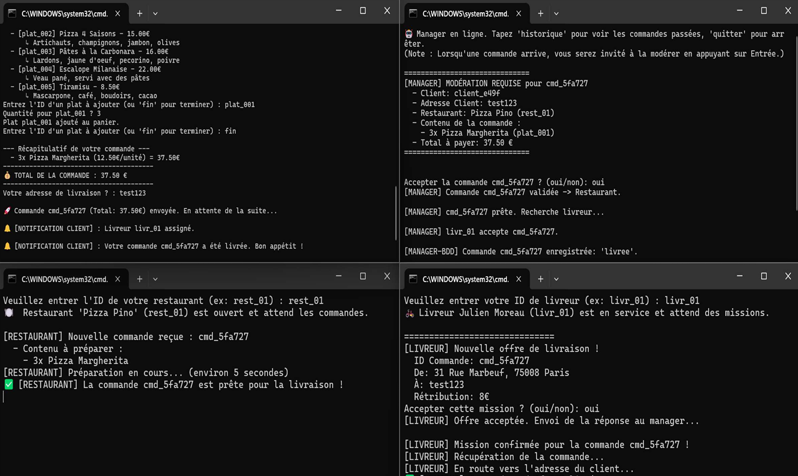
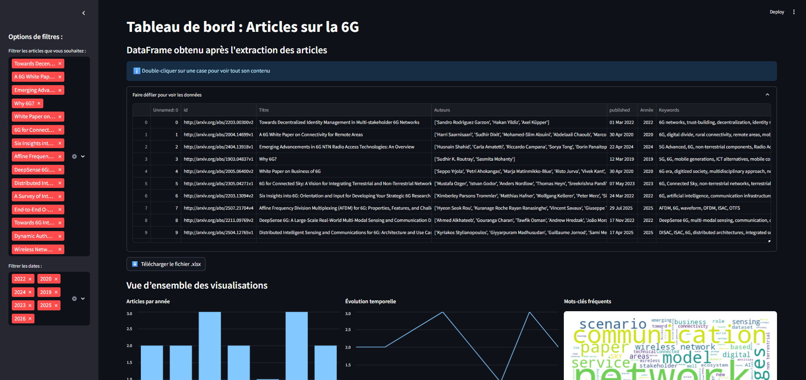
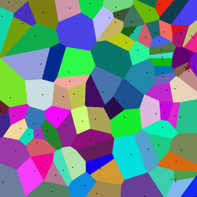
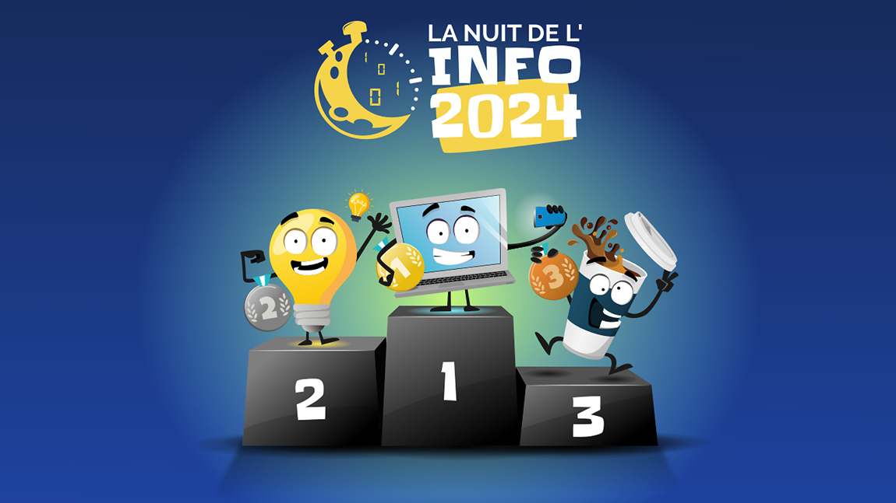
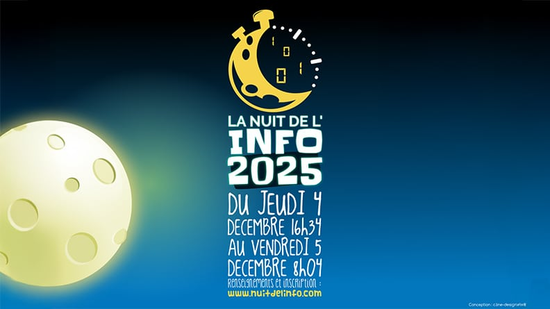

Projets réalisés

Simulation plateforme de livraison (NoSQL)
Conception et développement de deux architectures back-end comparatives (Redis et MongoDB) pour la coordination temps réel de flux logistiques. Implémentation de Pub/Sub, Change Streams et analyse comparative des performances.

Web scraping & analyse académique 6G (THALES)
Application d'extraction automatisée et d'analyse de données académiques sur la 6G via l'API Arxiv et des LLMs (Groq). Dashboard interactif de data visualisation et scoring de pertinence des publications scientifiques.
Neon Invasion
Jeu de type shoot'em up 2D développé en Python avec Pygame dans le cadre du cours de programmation multimédia intégrant une architecture orientée objet.
SerendIA — Application de recommandation de voyages
SérendIA est une application mobile développée en Flutter qui aide les utilisateurs à découvrir leur prochaine destination de voyage idéale. Contrairement aux filtres classiques, Serendia utilise un moteur de recommandation vectoriel qui apprend de vos préférences et de vos interactions en temps réel.

Diagrammes de Voronoï & Étude IA génératives
Développement d'algorithme pour la génération et l'affichage de diagrammes de Voronoï à partir de coordonnées (x,y) lues depuis un fichier texte avec export SVG. Phase d'audit comparative basée sur 7 IA génératives de code (prompts, dette technique, souveraineté). Études des risques de l'IA générative (environnement, sécurité, souveraineté et géopolitique, ...)

La Nuit de l'Info — Édition 2024
Développement d'un site web autour d'une thématique d'actualité lors d'un défi informatique national (10h nocturnes). Organisation collective sous pression extrême, créativité et résolution de problèmes en temps réel.

La Nuit de l'Info — Édition 2025
2e participation consécutive. Fort d'une expérience acquise en 2024, meilleure organisation, répartition des rôles améliorée et qualité technique du livrable renforcée. Application plus poussée des compétences BUT acquises.